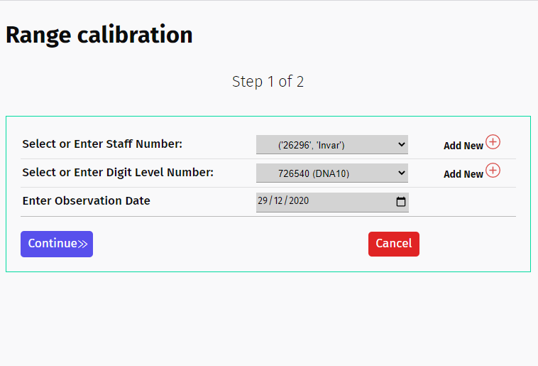

Forms¶
Overview¶
Before going to the view, we will need to design a form to submit/upload the Range measurement data. The form should have the following elements:
Select the levelling instruments - staves and digital levels
Date picker to select the observaton date. Raise validation errors if a future date is selected or if the date selected is earler than Jan 2018.
File uploader to upload the raw range measurements
Field to enter start and end temperture for each of the two observation sets
Multi-step form¶
To make the process simple and clear, form data submission is done using a two-step form, i.e., by using two Forms spread across two different templates. Forms are defined in a new file called forms.py in the range_calibration directory. The two Forms created are (i) RangeForm1 and (ii) RangeForm2:
#filename- staff/range_calibration/forms.py
from django import forms
from .models import Calibration_Update
from staffs.models import Staff, DigitalLevel
# make your forms
class RangeForm1(forms.ModelForm):
...
class RangeForm2(forms.Forms):
...

a Step 1 - |

b Step 2 - |
RangeForm1¶
RangeForm1 is a model Form with three fields - staff_number, level_number, and observation_date. Figure a) shows how the form looks like. The staff_number and level_number are fields inherited from the models Staff and DigitalLevel, respectively, and are made selectable from the user’s list of staves and digital levels. If the dropdown list is empty, users will be required to click the + button to add them. RangeForm1 has the following definition:
class RangeForm1(forms.ModelForm):
# this function will filter the staves and digital levels based on the user authority and display only those
# instruments registered with the same company
def __init__(self, *args, **kwargs):
user = kwargs.pop('user', None)
super(RangeForm1, self).__init__(*args, **kwargs)
self.fields['staff_number'].queryset = Staff.objects.filter(user__authority = user.authority,
staff_type__staff_type__exact = "Invar")
self.fields['level_number'].queryset = DigitalLevel.objects.filter(user__authority = user.authority)
# Select the model and the fields to be displayed
# forms.Select enables to select an item from a dropdown display of items
# forms.DateInput enables to display the calender for selecting the observation date. The date format is customised as DDMMYY (``%d-%m-%Y``).
class Meta:
model = Calibration_Update
fields = ['staff_number', 'level_number', 'observation_date']
widgets = {
'staff_number': forms.Select(),
'level_number': forms.Select(),
'observation_date': forms.DateInput(format=('%d-%m-%Y'), attrs={'class':'django-forms', 'placeholder':'Select a date', 'type':'date'}),
}
Note that the + button leads to the previously created URL staff-create and/or level-create in the staffs application.
RangeForm2¶
RangeForm2 is a Form class for entering the temperature fields and upload the raw measurement file. The form is shown in Figure b) and the Form is defined like this:
class RangeForm2(forms.Form):
# this function disables the user association for this form
# without this function the form will not work
def __init__(self, *args, **kwargs):
user = kwargs.pop('user', None)
super(RangeForm2, self).__init__(*args, **kwargs)
# Temperature is recorded twice - start & end of each observation set
# raises a validation error if temperature entered is not within a range of 0-45 degrees
start_temperature_1 = forms.FloatField(widget=forms.NumberInput(attrs={'placeholder':'Enter 0-45'}))
end_temperature_1 = forms.FloatField(widget=forms.NumberInput(attrs={'placeholder':'Enter 0-45'}))
start_temperature_2 = forms.FloatField(widget=forms.NumberInput(attrs={'placeholder':'Enter 0-45'}))
end_temperature_2 = forms.FloatField(widget=forms.NumberInput(attrs={'placeholder':'Enter 0-45'}))
# field for loading the raw file
# type of document accepted - .txt or .asc but this is specified in the views.py
document = forms.FileField()
Form Wizard & Settings¶
The form wizard application splits forms across multiple HTML templates or pages. It maintains state in one of the backends so that the full server-side processing can be delayed until the submission of the final form. It is particularly useful for projecting lengthy forms that would be too unwieldy for display on a single page. Here, RangeForm1 and RangeForm2 are not very complex but nevertheless warrants multi-step outlook.
In Django, we can implement this using a plugin tool known as django-formtools which is installed with pip install django-formtools via the command prompt. The form-tools application is then listed in the INSTALLED_APPS in settings.py:
#filename: staff/staff/settings.py
INSTALLED_APPS = [
...
'formtools',
...
]
For more details on the usage of formtools, please refer to https://django-formtools.readthedocs.io/en/latest/wizard.html but for now we will go to view and URL mapper to use the formtools, render them to HTML templates and process the data submissions.